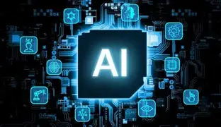

Inteligencia artificial
La inteligencia artificial permite que los sistemas realicen tareas como analizar información, responder preguntas y ayudar en diferentes actividades.

Nuevas tendencias e innovación digital
La inteligencia artificial permite que los sistemas realicen tareas como analizar información, responder preguntas y ayudar en diferentes actividades.

Permite almacenar información y utilizar programas a través de internet sin depender únicamente de un equipo físico.
Conecta objetos y dispositivos a internet para intercambiar información y facilitar actividades.
Busca proteger los datos personales, las cuentas y la información que compartimos en internet.
Las tecnologías web seguirán evolucionando y creando nuevas oportunidades para la educación, la comunicación y los negocios.
Es importante utilizar la tecnología de forma segura, ética y responsable.
A continuación, puedes insertar un video educativo relacionado con las tecnologías digitales.